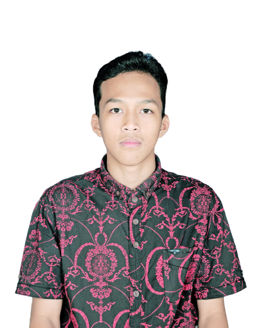

Git & GitHub Fundamentals
Memahami Version Control untuk Kolaborasi Software Development — dimulai dari nol, tanpa asumsi kamu pernah pakai terminal sama sekali.
Sebelum mulai, kenalan sebentar

Andika Prasetiawan
- 3+ tahun berkarier sebagai Software Engineer / Full Stack Developer, sejak Mei 2023
- Sudah pakai Git tiap hari kerja sejak awal berkarier — udah kayak refleks, bukan lagi sesuatu yang dipikirin
- Merancang & membangun sendiri website workshop yang sedang kalian lihat ini — native HTML, CSS, dan JavaScript, tanpa framework
Tugas saya hari ini bukan bikin kalian hafal semua perintah Git dalam satu jam. Tugas saya adalah bikin kalian nggak takut lagi waktu dengar kata "commit", "branch", atau "push".
Kalau di tengah sesi ada yang belum jelas — angkat tangan aja, workshop ini interaktif.
Kenapa kita harus belajar Git?
Git itu kayak SIM buat developer — bukan penentu jago-tidaknya kamu "menyetir", tapi tanpa itu kamu belum boleh masuk ke jalan raya dunia kerja.
Pernah alami ini nggak?
"Kalau file sudah sebanyak ini, gimana caranya kita tahu mana yang paling benar?"
Dan ini baru satu orang, satu laptop. Bayangkan kalau file ini dikerjakan bertiga, berempat, dalam waktu bersamaan.
Ini yang sebenarnya terjadi
Kerja bareng tanpa version control itu kayak masak bareng di satu wajan tanpa komunikasi — ada yang nambahin garam padahal udah keasinan duluan.
Kenalkan: Version Control System
Version Control System (VCS) adalah sistem yang mencatat setiap perubahan pada file dari waktu ke waktu — supaya kamu bisa melihat, membandingkan, dan mengembalikan versi kapan pun dibutuhkan.
Kalau kedengarannya asing, tenang — kamu sebenarnya sudah pernah pakai versi sederhananya.
Fitur "Version History" — bisa lihat & balik ke draft sebelumnya.
Fitur "Save Game" — kalau salah jalan, tinggal load checkpoint.
Ctrl+Z bertingkat yang tidak pernah hilang meski aplikasi ditutup.
Tiga generasi Version Control
Local VCS
Riwayat tersimpan di satu komputer saja. Tidak bisa dipakai kolaborasi.
Centralized VCS
Satu server pusat menyimpan semua riwayat. Semua orang terhubung ke situ.
Distributed VCS
Setiap orang punya salinan riwayat lengkap. Ini kategori Git.
Centralized itu kayak satu buku catatan dipegang bendahara kelas — kalau bukunya hilang, semua data ikut hilang. Distributed itu kayak semua anggota kelas punya fotokopi lengkap buku itu.
Apa sebenarnya Git itu?
Git adalah software Distributed Version Control yang dipasang di komputer kamu untuk mencatat setiap perubahan proyek — kapan, oleh siapa, dan apa isinya.
Git itu kayak kamera. Setiap kali kamu commit, Git "memotret" kondisi seluruh proyek kamu saat itu juga — dan foto itu tersimpan selamanya.
Kenapa Git jadi standar industri
Lalu, apa itu GitHub?
GitHub adalah platform berbasis cloud yang dibangun di atas Git — tempat menyimpan repository secara online supaya bisa diakses & dikerjakan bareng tim, kapan saja, dari mana saja.
Kalau Git itu mesinnya, GitHub itu bengkel + garasi bersama tempat mesin itu dipakai rame-rame.
Salinan proyek tersimpan online, bisa diakses dari komputer mana pun.
Banyak orang bisa kerja di proyek yang sama secara terstruktur.
Rumah bagi jutaan proyek open source dunia.
Profil GitHub jadi bukti nyata kemampuan coding kamu.
Git ≠ GitHub
| Git | GitHub |
|---|---|
| Software yang di-install di komputer kamu | Website / layanan cloud yang dibuka di browser |
| Bekerja lokal, bisa offline sepenuhnya | Butuh internet untuk sinkronisasi |
| Mengatur riwayat & versi file | Tempat menyimpan & berbagi riwayat itu bersama tim |
| Dibuat oleh Linus Torvalds (2005) | Dibuat oleh perusahaan terpisah (2008), kini dimiliki Microsoft |
Git = kamera & Microsoft Word (alat kerja lokal). GitHub = Google Photos, Google Drive, sekaligus media sosial buat developer. Catatan: analogi ini disederhanakan, bukan definisi teknis 100%.
GitHub punya beberapa "saudara"
Kita pakai GitHub di workshop ini karena paling populer untuk belajar & kolaborasi open source — paling banyak tutorial, komunitas, dan lowongan kerja yang menyebutnya.
Begini alurnya dari awal sampai akhir
Developer A mengedit proyek → commit → push ke GitHub. Developer B pull/clone dari GitHub, ikut mengedit, commit, push balik. Siklus ini berputar terus — semua orang selalu bisa mendapat versi terbaru.
Istilah yang akan sering kamu dengar
Folder proyek yang "diingat" Git — menyimpan seluruh riwayat perubahannya.
Titik simpan / checkpoint dari kondisi proyek pada satu waktu tertentu.
Jalur cabang untuk mencoba perubahan tanpa mengganggu jalur utama.
Menyatukan kembali dua jalur (branch) yang sempat berjalan terpisah.
Membuat salinan lengkap sebuah repository ke komputer kamu.
Mengirim commit dari komputer kamu ke GitHub.
Mengambil commit terbaru dari GitHub ke komputer kamu.
Alamat repository di server lain — biasanya GitHub.
Tiga status setiap file di Git
Modified
File sudah diubah, tapi belum ditandai untuk disimpan.
Staged
Sudah ditandai, siap masuk ke riwayat permanen.
Committed
Resmi tersimpan permanen di riwayat proyek.
Modified itu kayak barang belanjaan masih di rak. Staged itu udah masuk keranjang. Committed itu udah dibayar di kasir — resmi jadi milik kamu, tercatat di struk.
Tiga "tempat" file kamu hidup
Working Directory
Folder proyek asli di laptop kamu.
Staging Area
Ruang tunggu sebelum resmi disimpan.
Repository
Riwayat permanen, tersimpan selamanya.
Lanjutan dari analogi belanja tadi: Repository itu struk belanja yang sudah dicetak & disimpan selamanya sebagai bukti — nggak bisa hilang begitu saja.
Sekarang, kita coba beneran
Pemula boleh mulai dari tombol-tombol ini dulu sebelum terbiasa pakai terminal.
Bonus kalau waktu cukup: git push ke repository GitHub bisa langsung dipublikasikan jadi website lewat GitHub Pages — gratis, dalam hitungan menit.
Cheat sheet buat dibawa pulang
Mulai repository baru di folder ini.
Lihat apa saja yang berubah.
Tandai semua perubahan untuk disimpan.
Simpan perubahan sebagai checkpoint.
Kirim commit ke GitHub.
Ambil versi terbaru dari GitHub.
Salin repository dari GitHub ke laptop.
Roadmap lanjutan setelah workshop ini: branch → merge → Pull Request — level berikutnya begitu alur dasar ini sudah lancar di tangan.
Ke mana setelah ini?
Ada pertanyaan?
Belajar Git itu kayak belajar sepeda — jatuh di awal itu wajar, tapi begitu sudah bisa, seumur hidup nggak lupa.